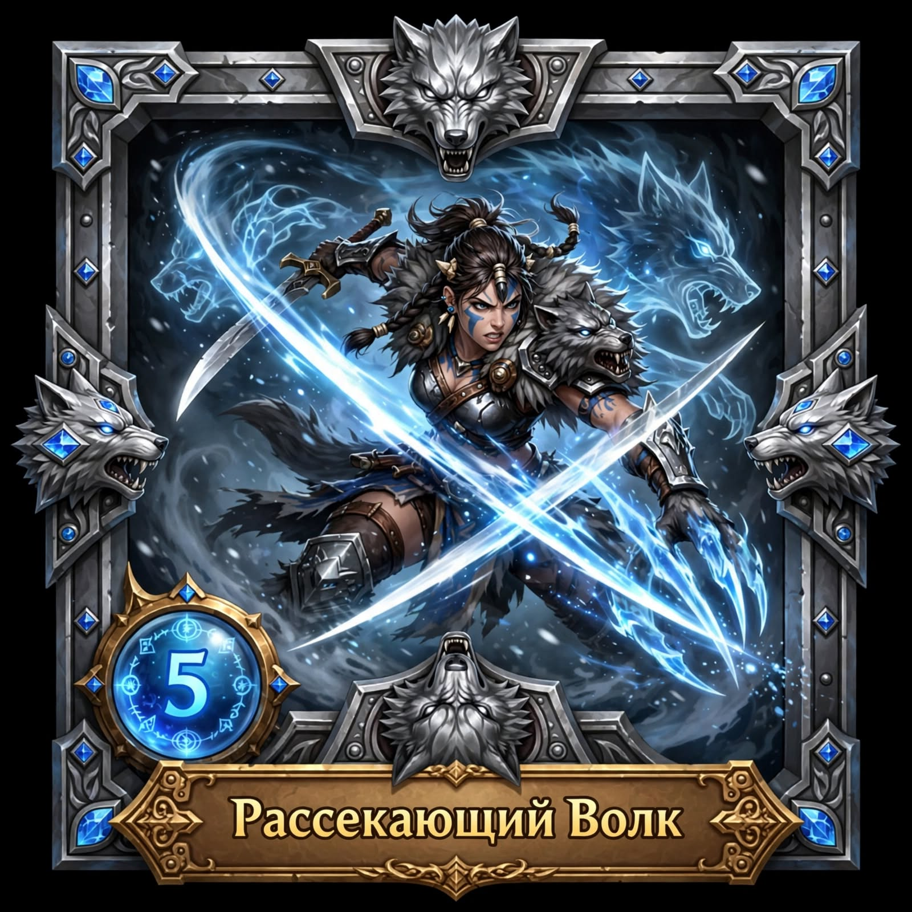

IRON VOW warrior-f
Клятва Стаи PASSIVE
При HP <30% урон +50% и +30% лайфстил от нанесенного урона.

Рассекающий Волк 1
2 удара мечом по 110% урона каждый.
Щит Волчьего Вожака 2
Поднимает щит с волком на 4 раунда, блокирует урон с вероятностью 50%. Успешный блок дает контратаку на 350% урона.
Зов Стаи 3
Издает зов волка, который станит 1 врага, все остальные враги получают 200% урона, оглушенный враг получает урон 2 раза.
Альфа Хищник 4
ULTIMATE: Превращается в волка на 5 раундов: +50% макс HP, +30% урона, атаки наносят кровотечение 100% урона.